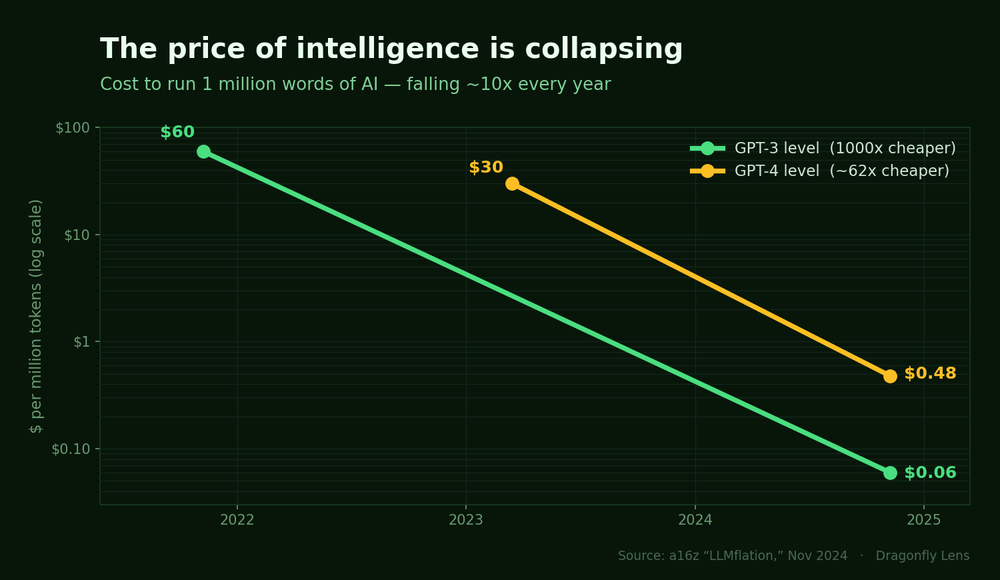

Everyone is arguing about the wrong question. Which model is smartest — GPT vs Gemini vs Claude vs the new open-source thing that topped a leaderboard this week? It makes good headlines. It's the wrong fight. The AI race won't be won by the smartest model. It'll be won by whoever delivers intelligence the cheapest — and "cheapest" comes down to one thing nobody can print on demand: electricity.
Here's the metric that, once you see it, you can't unsee — and why it quietly reorders who actually makes money from the biggest buildout of our lifetime.
You can buy your way to a bigger model — order more chips, wire them together, train longer. Capital solves it. But those chips don't run on capital. They run on power — staggering amounts of it. And power is physical. You can't summon a gigawatt the way you can wire a billion dollars. Power plants take years. Transmission lines take longer. The grid is already creaking.
Think of it like this: you can buy a fleet of supercars overnight, but you can't build the highways and gas stations overnight. Right now the AI industry has a garage full of supercars and is discovering there's nowhere to drive them.
How real is this? In 2024, Microsoft signed a 20-year deal to restart a mothballed reactor at Three Mile Island — the site of America's worst nuclear accident — to help power its data centers. An 835-megawatt reactor, shut down since 2019, is being brought back from the dead specifically to feed AI. When the most valuable companies on Earth are reviving nuclear plants for compute, the bottleneck isn't a forecast. It's already here. The smartest people in the industry already know: the bottleneck isn't intelligence. It's watts.
So here's the number that matters. Not "how smart is the model." It's: how much useful intelligence can you deliver per unit of energy — and per dollar spent building it?
Call it intelligence per watt per dollar. The company that wins that equation wins the decade, because in a world where everyone has access to good-enough models, the one who serves them cheapest takes the market — and cheapest means most efficient with the scarce input, which is energy.
Notice we said useful intelligence, not raw output. A system that spits out a flood of mediocre answers cheaply isn't winning. The clean way to measure "useful" is to let the market do it: revenue per unit of power. If people pay for it, it was useful.
The catch: no company reports "tokens per watt." You won't find it in an earnings release. But there's a number you can watch, and it's the whole story in disguise — the price of AI itself.

The cost to match GPT-3's level dropped from about $60 to $0.06 per million words in three years — a thousand-fold collapse, roughly 10x cheaper every year. The falling price of AI is the efficiency curve, made visible. You don't need companies to confess their tokens-per-watt. You just watch what they charge — and the trajectory tells you who's winning the physics.
Here's the move most investors miss. Because you can't cleanly tell which model will win — they leapfrog each other monthly — betting on the model is betting on a coin flip. So don't. Bet on the bottleneck instead, because the scarce input gets paid no matter which model is on top.
In a gold rush, you sell shovels. In this rush, the shovels are power and memory. Walk the chain and ask, at each link, "is this the scarce thing right now?":
The two links flashing red today — the genuine scarcity — are energy and memory. That's where the durable money is, because they win regardless of which model wins.
One honest caveat, because the Lens shows you the risks too. The model layer is the wildcard. When DeepSeek trained a GPT-4-class model for a reported ~$6 million — against the ~$100 million GPT-4 is estimated to have cost, on roughly a tenth of the compute — and then served it at around 30x lower cost per token, it proved a software breakthrough can leapfrog brute force. It briefly spooked everyone long the "we'll need infinite chips forever" trade.
But here's the twist, and it's a 170-year-old idea called Jevons paradox: when you make something more efficient, people don't use less of it — they use way more, because now it's cheap enough for a thousand new uses. Cheaper steam engines burned more coal, not less. Cheaper intelligence won't shrink demand for power — it'll explode it. Efficiency doesn't shrink the pie. It eats the world.
Don't bet on the smartest model. Bet on the scarce input. Own the picks-and-shovels at the bottleneck — power and memory, today. They get paid no matter which model is on top.
And watch the price of AI as your signal: when it drops, efficiency just jumped — and Jevons says demand is about to chase it.
Bottom line: the model leaderboard changes every week. The laws of thermodynamics don't. This is how the Dragonfly Lens reads the AI buildout — not the hype, the physics and the economics underneath it.
The Lens tracks the full AI value chain — compute, memory, energy, and the bottleneck-solvers — and every signal we publish is cryptographically signed and timestamped, so you can check our record instead of trusting it.
Explore the Lens →